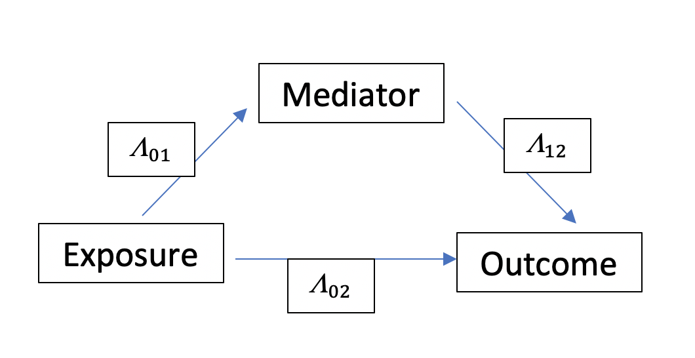

vignettes/overview.Rmd
overview.RmdThis document describes how the seven causal mediation analysis approaches including the regression-based approach by Valeri et al. (2013) and VanderWeele et al. (2014), the weighting-based approach by VanderWeele et al. (2014), the inverse odd-ratio weighting approach by Tchetgen Tchetgen (2013), the natural effect model by Vansteelandt et al. (2012), the marginal structural model by VanderWeele et al. (2017), the \(g\)-formula approach by Robins (1986), and The multistate approach for stochastic interventions on a time-to event mediator in the presence of semi-competing risks by Valeri et al. (2021) are implemented by the CMAverse package. See publications of these approaches for methodological details .
CMAverse currently supports a single exposure, multiple sequential mediators and a single outcome. When multiple mediators are of interest, CMAverse estimates the joint mediated effect through the set of mediators. CMAverse also supports time varying confounders preceding the mediators.
We categorize the causal mediation analysis approaches based on whether the approach can deal with mediator-outcome confounders affected by the exposure. Among the seven approaches, only The marginal structural model and the \(g\)-formula approach are able to deal with mediator-outcome confounders affected by the exposure.
In this document, the outcome and the exposure are denoted as \(Y\) and \(A\) respectively. The set of exposure-mediator confounders, exposure-outcome confounders and mediator-outcome confounders not affected by the exposure is denoted as \(C\). The set of mediators is denoted as \(M\) and \(M=(M_1,...,M_k)\) follows the temporal order. The set of mediator-outcome confounders affected by the exposure is denoted as \(L\) and \(L=(L_1,...,L_s)\) follows the temporal order.
Since weights calculated from noncategorical variables are unstable, which hurts the performance of effect estimation and inference, weighted approaches can be implemented only for categorical exposure and mediator(s).
For a continuous outcome or survival outcome with a time-to-event mediator, causal effects are estimated on the difference scale (summarized in table 1). For a categorical, count, or survival outcome, causal effects are estimated on the ratio scale (summarized in table 2). See Valeri et al. (2013) and VanderWeele (2015) for details about these effects.
| Full Name | Abbreviation | Formula |
|---|---|---|
| Controlled Direct Effect | \(CDE\) | \(E[Y_{am}-Y_{a^*m}]\) |
| Pure Natural Direct Effect | \(PNDE\) | \(E[Y_{aM_a^*}-Y_{a^*M_a^*}]\) |
| Total Natural Direct Effect | \(TNDE\) | \(E[Y_{aM_a}-Y_{a^*M_a}]\) |
| Pure Natural Indirect Effect | \(PNIE\) | \(E[Y_{a^*M_a}-Y_{a^*M_a^*}]\) |
| Total Natural Indirect Effect | \(TNIE\) | \(E[Y_{aM_a}-Y_{aM_a^*}]\) |
| Residual Disparity | \(RD\) | \(P(S_g\)>\(s|a,c)-P(S_{g}\)>\(s|a^{*},c)\) |
| Shifting Distribution Effect | \(SDE\) | \(P(S_{g}\)>\(s|a,c)-P(S_{g^*}\)>\(s|a,c)\) |
| Total Effect | \(TE\) | \(PNDE+TNIE\) or \(TNDE+PNIE\) or \(RD+SD\) |
| Reference Interaction | \(INT_{ref}\) | \(PNDE-CDE\) |
| Mediated Interaction | \(INT_{med}\) | \(TNIE-PNIE\) |
| Proportion \(CDE\) | \(prop^{CDE}\) | \(CDE/TE\) |
| Proportion \(INT_{ref}\) | \(prop^{INT_{ref}}\) | \(INT_{ref}/TE\) |
| Proportion \(INT_{med}\) | \(prop^{INT_{med}}\) | \(INT_{med}/TE\) |
| Proportion \(PNIE\) | \(prop^{PNIE}\) | \(PNIE/TE\) |
| Proportion Mediated | \(PM\) | \(TNIE/TE\) |
| Proportion Attributable to Interaction | \(INT\) | \((INT_{ref}+INT_{med})/TE\) |
| Proportion Eliminated | \(PE\) | \((INT_{ref}+INT_{med}+PNIE)/TE\) |
| Note: | ||
| \(a\) and \(a^*\) are the active and control values for \(A\) respectively. \(m\) is the value at which \(M\) is controlled. \(M_a\) denotes the counterfactual value of \(M\) that would have been observed had \(A\) been set to be \(a\). \(Y_{am}\) denotes the counterfactual value of \(Y\) that would have been observed had \(A\) been set to be \(a\), and \(M\) to be \(m\). \(Y_{aMa*}\) denotes the counterfactual value of \(Y\) that would have been observed had \(A\) been set to be \(a\), and \(M\) to be the counterfactual value \(M_{a*}\). \(g\) is the random draw from the time to mediator distribution observed among individuals without exposure. \(g^*\) is the random draw from the time to mediator distribution observed among individuals with exposure. |
| Full Name | Abbreviation | Formula |
|---|---|---|
| Controlled Direct Effect | \(R^{CDE}\) | \(E[Y_{am}]/E[Y_{a^*m}]\) |
| Pure Natural Direct Effect | \(R^{PNDE}\) | \(E[Y_{aM_a^*}]/E[Y_{a^*M_a^*}]\) |
| Total Natural Direct Effect | \(R^{TNDE}\) | \(E[Y_{aM_a}]/E[Y_{a^*M_a}]\) |
| Pure Natural Indirect Effect | \(R^{PNIE}\) | \(E[Y_{a^*M_a}]/E[Y_{a^*M_a^*}]\) |
| Total Natural Indirect Effect | \(R^{TNIE}\) | \(E[Y_{aM_a}]/E[Y_{aM_a^*}]\) |
| Total Effect | \(R^{TE}\) | \(R^{PNDE}\times R^{TNIE}\) or \(R^{TNDE}\times R^{PNIE}\) |
| Excess Ratio due to Controlled Direct Effect | \(ER^{CDE}\) | \((E[Y_{am}-Y_{a^*m}])/E[Y_{a^*M_a^*}]\) |
| Excess Ratio due to Reference Interaction | \(ER^{INT_{ref}}\) | \(R^{PNDE}-1-ER^{CDE}\) |
| Excess Ratio due to Mediated Interaction | \(ER^{INT_{med}}\) | \(R^{TNIE}*R^{PNDE}-R^{PNDE}-R^{PNIE}+1\) |
| Excess Ratio due to Pure Natural Indirect Effect | \(ER^{PNIE}\) | \(R^{PNIE}-1\) |
| Proportion \(ER^{CDE}\) | \(prop^{ER^{CDE}}\) | \(ER^{CDE}/(R^{TE}-1)\) |
| Proportion \(ER^{INT_{ref}}\) | \(prop^{ER^{INT_{ref}}}\) | \(ER^{INT_{ref}}/(R^{TE}-1)\) |
| Proportion \(ER^{INT_{med}}\) | \(prop^{ER^{INT_{med}}}\) | \(ER^{INT_{med}}/(R^{TE}-1)\) |
| Proportion \(ER^{PNIE}\) | \(prop^{ER^{PNIE}}\) | \(ER^{PNIE}/(R^{TE}-1)\) |
| Proportion Mediated | \(PM\) | \((R^{PNDE}*(R^{TNIE}-1))/(R^{TE}-1)\) |
| Proportion Attributable to Interaction | \(INT\) | \((ER^{INT_{ref}}+ER^{INT_{med}})/(R^{TE}-1)\) |
| Proportion Eliminated | \(PE\) | \((ER^{INT_{ref}}+ER^{INT_{med}}+ER^{PNIE})/(R^{TE}-1)\) |
| Note: | ||
| \(a\) and \(a^*\) are the active and control values for \(A\) respectively. \(m\) is the value at which \(M\) is controlled. \(M_a\) denotes the counterfactual value of \(M\) that would have been observed had \(A\) been set to be \(a\). \(Y_{am}\) denotes the counterfactual value of \(Y\) that would have been observed had \(A\) been set to be \(a\), and \(M\) to be \(m\). \(Y_{aMa*}\) denotes the counterfactual value of \(Y\) that would have been observed had \(A\) been set to be \(a\), and \(M\) to be the counterfactual value \(M_{a*}\). If \(Y\) is categorical, \(E[Y]\) represents the probability of \(Y=y\) where \(y\) is a pre-specified value of \(Y\). |
With the regression-based approach, all causal effects are estimated through either closed-form parameter function estimation or direct counterfactual imputation estimation. Standard errors of causal effects are estimated through either the delta method or bootstrapping.
Closed-form parameter function estimation is available when there is only a single mediator, i.e., \(M=M_1\). Also, yreg must be chosen from linear, logistic, loglinear, poisson, quasipoisson, negbin, coxph, aft_exp and aft_weibull. mreg must be chosen from linear, logistic and multinomial. To use yreg = "logistic" and yreg = "coxph" in closed-form parameter function estimation, the outcome must be rare. Additionally, the causal effects estimated through closed-form parameter function estimation are conditional on the value of \(C\) specified by the precval argument. Closed-form parameter functions are summarized below.
yreg, Linear mreg and Noncategorical ExposureIf the exposure is not categorical, yreg="linear" and mreg=list("linear"), CMAverse estimates the causal effects by the following steps:
Fit a linear regression model for the mediator: \[E[M|A,C]=\beta_0+\beta_1A+\beta_2'C\]
Fit a linear regression model for the outcome: \[E[Y|A,M,C]=\theta_0+\theta_1A+\theta_2M+\theta_3AM+\theta_4'C\]
Estimate \(CDE\), \(PNDE\), \(TNDE\), \(PNIE\) and \(TNIE\) by the following parameter functions:
Calculate other effects using formulas in table 1.
yreg, Linear mreg and Categorical ExposureIf the exposure is categorical, yreg="linear" and mreg=list("linear"), CMAverse estimates the causal effects by the following steps:
Fit a linear regression model for the mediator: \[E[M|A,C]=\beta_0+\sum_{h=1}^H\beta_{1h}I\{A=h\}+\beta_2'C\]
Fit a linear regression model for the outcome: \[E[Y|A,M,C]=\theta_0+\sum_{h=1}^H\theta_{1h}I\{A=h\}+\theta_2M+\sum_{h=1}^H\theta_{3h}I\{A=h\}M+\theta_4'C\]
Estimate \(CDE\), \(PNDE\), \(TNDE\), \(PNIE\) and \(TNIE\) by the following parameter functions:
Calculate other effects using formulas in table 1.
yreg, Logistic mreg and Noncategorical ExposureIf the exposure is not categorical, yreg="linear" and mreg=list("logistic"), CMAverse estimates the causal effects by the following steps:
Fit a logistic regression model for the mediator: \[logitE[M|A,C]=\beta_0+\beta_1A+\beta_2'C\]
Fit a linear regression model for the outcome: \[E[Y|A,M,C]=\theta_0+\theta_1A+\theta_2M+\theta_3AM+\theta_4'C\]
Estimate \(CDE\), \(PNDE\), \(TNDE\), \(PNIE\) and \(TNIE\) by the following parameter functions:
Calculate other effects using formulas in table 1.
yreg, Logistic mreg and Categorical ExposureIf the exposure is categorical, yreg="linear" and mreg=list("logistic"), CMAverse estimates the causal effects by the following steps:
Fit a logistic regression model for the mediator: \[logitE[M|A,C]=\beta_0+\sum_{h=1}^H\beta_{1h}I\{A=h\}+\beta_2'C\]
Fit a linear regression model for the outcome: \[E[Y|A,M,C]=\theta_0+\sum_{h=1}^H\theta_{1h}I\{A=h\}+\theta_2M+\sum_{h=1}^H\theta_{3h}I\{A=h\}M+\theta_4'C\]
Estimate \(CDE\), \(PNDE\), \(TNDE\), \(PNIE\) and \(TNIE\) by the following parameter functions:
Calculate other effects using formulas in table 1.
yreg, Multinomial mreg and Noncategorical ExposureIf the exposure is not categorical, yreg="linear" and mreg=list("multinomial"), CMAverse estimates the causal effects by the following steps:
Fit a multinomial regression model for the mediator: \[log\frac{E[M=j|A,C]}{E[M=0|A,C]}=\beta_{0j}+\beta_{1j}A+\beta_{2j}'C, j=1,2,...,J\]
Fit a linear regression model for the outcome: \[E[Y|A,M,C]=\theta_0+\theta_1A+\sum_{j=1}^J\theta_{2j}I\{M=j\}+A\sum_{j=1}^J\theta_{3j}I\{M=j\}+\theta_4'C\]
Estimate \(CDE\), \(PNDE\), \(TNDE\), \(PNIE\) and \(TNIE\) by the following parameter functions:
Calculate other effects using formulas in table 1.
yreg, Multinomial mreg and Categorical ExposureIf the exposure is categorical, yreg="linear" and mreg=list("multinomial"), CMAverse estimates the causal effects by the following steps:
Fit a multinomial regression model for the mediator: \[log\frac{E[M=j|A,C]}{E[M=0|A,C]}=\beta_{0j}+\sum_{h=1}^H\beta_{1jh}I\{A=h\}+\beta_{2j}'C, j=1,2,...,J\]
Fit a linear regression model for the outcome: \[E[Y|A,M,C]=\theta_0+\sum_{h=1}^H\theta_{1h}I\{A=h\}+\sum_{j=1}^J\theta_{2j}I\{M=j\}+\sum_{j=1}^J\sum_{h=1}^H\theta_{3jh}I\{M=j\}I\{A=h\}+\theta_4'C\]
Estimate \(CDE\), \(PNDE\), \(TNDE\), \(PNIE\) and \(TNIE\) by the following parameter functions:
Calculate other effects using formulas in table 1.
yreg, Linear mreg and Noncategorical ExposureIf the exposure is not categorical, yreg!="linear" and mreg=list("linear"), CMAverse estimates the causal effects by the following steps:
Fit a linear regression model for the mediator: \[E[M|A,C]=\beta_0+\beta_1A+\beta_2'C+\epsilon_M,\epsilon_M\sim N(0,\sigma^2)\]
Fit the specified regression model for the outcome: \[g(E[Y|A,M,C])=\theta_0+\theta_1A+\theta_2M+\theta_3AM+\theta_4'C\]
Estimate \(R^{CDE}\), \(R^{PNDE}\), \(R^{TNDE}\), \(R^{PNIE}\), \(R^{TNIE}\) and \(ER^{CDE}\) by the following parameter functions:
Calculate other effects using formulas in table 2.
yreg, Linear mreg and Categorical ExposureIf the exposure is categorical, yreg!="linear" and mreg=list("linear"), CMAverse estimates the causal effects by the following steps:
Fit a linear regression model for the mediator: \[E[M|A,C]=\beta_0+\sum_{h=1}^H\beta_{1h}I\{A=h\}+\beta_2'C+\epsilon_M,\epsilon_M\sim N(0,\sigma^2)\]
Fit the specified regression model for the outcome: \[g(E[Y|A,M,C])=\theta_0+\sum_{h=1}^H\theta_{1h}I\{A=h\}+\theta_2M+\sum_{h=1}^H\theta_{3h}I\{A=h\}M+\theta_4'C\]
Estimate \(R^{CDE}\), \(R^{PNDE}\), \(R^{TNDE}\), \(R^{PNIE}\), \(R^{TNIE}\) and \(ER^{CDE}\) by the following parameter functions:
Calculate other effects using formulas in table 2.
yreg, Logistic mreg and Noncategorical ExposureIf the exposure is not categorical, yreg!="linear" and mreg=list("logistic"), CMAverse estimates the causal effects by the following steps:
Fit a logistic regression model for the mediator: \[logitE[M|A,C]=\beta_0+\beta_1A+\beta_2'C\]
Fit the specified regression model for the outcome: \[g(E[Y|A,M,C])=\theta_0+\theta_1A+\theta_2M+\theta_3AM+\theta_4'C\]
Estimate \(R^{CDE}\), \(R^{PNDE}\), \(R^{TNDE}\), \(R^{PNIE}\), \(R^{TNIE}\) and \(ER^{CDE}\) by the following parameter functions:
Calculate other effects using formulas in table 2.
yreg, Logistic mreg and Categorical ExposureIf the exposure is categorical, yreg!="linear" and mreg=list("logistic"), CMAverse estimates the causal effects by the following steps:
Fit a logistic regression model for the mediator: \[logitE[M|A,C]=\beta_0+\sum_{h=1}^H\beta_{1h}I\{A=h\}+\beta_2'C\]
Fit the specified regression model for the outcome: \[g(E[Y|A,M,C])=\theta_0+\sum_{h=1}^H\theta_{1h}I\{A=h\}+\theta_2M+\sum_{h=1}^H\theta_{3h}I\{A=h\}M+\theta_4'C\]
Estimate \(R^{CDE}\), \(R^{PNDE}\), \(R^{TNDE}\), \(R^{PNIE}\), \(R^{TNIE}\) and \(ER^{CDE}\) by the following parameter functions:
Calculate other effects using formulas in table 2.
yreg, Multinomial mreg and Noncategorical ExposureIf the exposure is not categorical, yreg!="linear" and mreg=list("multinomial"), CMAverse estimates the causal effects by the following steps:
Fit a multinomial regression model for the mediator: \[log\frac{E[M=j|A,C]}{E[M=0|A,C]}=\beta_{0j}+\beta_{1j}A+\beta_{2j}'C, j=1,2,...,J\]
Fit the specified regression model for the outcome: \[g(E[Y|A,M,C])=\theta_0+\theta_1A+\sum_{j=1}^J\theta_{2j}I\{M=j\}+A\sum_{j=1}^J\theta_{3j}I\{M=j\}+\theta_4'C\]
Estimate \(R^{CDE}\), \(R^{PNDE}\), \(R^{TNDE}\), \(R^{PNIE}\), \(R^{TNIE}\) and \(ER^{CDE}\) by the following parameter functions:
Calculate other effects using formulas in table 2.
yreg, Multinomial mreg and Categorical ExposureIf the exposure is categorical, yreg!="linear" and mreg=list("multinomial"), CMAverse estimates the causal effects by the following steps:
Fit a multinomial regression model for the mediator: \[log\frac{E[M=j|A,C]}{E[M=0|A,C]}=\beta_{0j}+\sum_{h=1}^H\beta_{1jh}I\{A=h\}+\beta_{2j}'C, j=1,2,...,J\]
Fit the specified regression model for the outcome: \[g(E[Y|A,M,C])=\theta_0+\sum_{h=1}^H\theta_{1h}I\{A=h\}+\sum_{j=1}^J\theta_{2j}I\{M=j\}+\sum_{j=1}^J\sum_{h=1}^H\theta_{3jh}I\{M=j\}I\{A=h\}+\theta_4'C\]
Estimate \(R^{CDE}\), \(R^{PNDE}\), \(R^{TNDE}\), \(R^{PNIE}\), \(R^{TNIE}\) and \(ER^{CDE}\) by the following parameter functions:
Calculate other effects using formulas in table 2.
CMAverse conducts direct counterfactual imputation estimation by the following steps:
Fit a regression model for \(E(Y|A,M,C)\). This regression model is specified by the yreg argument.
For \(p=1,...,k\), fit a regression model for the distribution of \(M_p\) given \(A\) and \(C\). These regression models are specified by the mreg argument.
For \(p=1,...,k\) and \(i=1,...,n\), simulate the counterfactuals \(M_{a,p,i}\) and \(M_{a^*,p,i}\).
For \(i=1,...,n\), obtain \(E[Y_i|A=a^*,M=m,C=C_i]\), \(E[Y_i|A=a,M=m,C=C_i]\), \(E[Y_i|A=a^*,M=M_{a^*,i},C=C_i]\), \(E[Y_i|A=a^*,M=M_{a,i},C=C_i]\), \(E[Y_i|A=a,M=M_{a^*,i},C=C_i]\) and \(E[Y_i|A=a,M=M_{a,i},C=C_i]\) from the regression model in step 1.
Impute the counterfactuals \(E[Y_{a^*m}]\), \(E[Y_{am}]\), \(E[Y_{a^*Ma^*}]\), \(E[Y_{aMa}]\), \(E[Y_{aMa^*}]\) and \(E[Y_{a^*Ma}]\).
Calculate causal effects with formulas in table 1 or table 2.
With the weighting-based approach, CMAverse estimates causal effects through direct counterfactual imputation estimation by the following steps:
Fit a regression model for the distribution of \(E(Y|A,M,C)\). This regression model is specified by the yreg argument.
If \(C\) is not empty, fit a regression model for \(P(A|C)\) and obtain \(P(A=A_i|C=C_i)\) for \(i=1,...,n\). This regression model is specified by the ereg argument.
For \(i=1,...,n\), obtain \(E[Y_i|A=a^*,M=m,C=C_i]\), \(E[Y_i|A=a,M=m,C=C_i]\), \(E[Y_i|A=a^*,M=M_i,C=C_i]\) and \(E[Y_i|A=a,M=M_i,C=C_i]\) from the regression model in step 1.
Impute the counterfactuals \(E[Y_{a^*m}]\), \(E[Y_{am}]\), \(E[Y_{a^*Ma^*}]\), \(E[Y_{aMa}]\), \(E[Y_{aMa^*}]\) and \(E[Y_{a^*Ma}]\).
Calculate causal effects with formulas in table 1 or table 2.
With the inverse odds ratio weighting approach, CMAverse estimates causal effects through direct counterfactual imputation estimation by the following steps:
Fit a regression model for \(P(A|M,C)\) and obtain \(\frac{P(A=0|M=M_i,C=C_i)}{P(A=A_i|M=M_i,C=C_i)}\) for \(i=1,...,n\). This regression model is specified by the ereg argument.
Fit a regression model for \(E(Y|A,C)\). This regression model is specified by the yreg argument.
Fit a weighted regression model for \(E(Y|A,C)\) and each subject \(i\) is given a weight \(\frac{P(A=0|M=M_i,C=C_i)}{P(A=A_i|M=M_i,C=C_i)}\). This regression model is obtained by adding the weights to the regression model in step 2.
Impute the counterfactuals \(E_{tot}[Y_{a}]\), \(E_{tot}[Y_{a^*}]\), \(E_{dir}[Y_{a}]\) and \(E_{dir}[Y_{a^*}]\).
With the natural effect model, CMAverse estimates causal effects through direct counterfactual imputation estimation by the following steps:
Fit a regression model for \(E(Y|A,M,C)\). This regression model is specified by the yreg argument.
Expand the dataset using the regression model in step 1 and the neImpute function in the medflex package. The expanded dataset gives \(A0\) for the direct effect and \(A1\) for the indirect effect.
Fit the regression model in step 1 by the expanded dataset in step 2 with the exposure in the regression formula replaced by \(A0\) and mediators in the regression formula replaced by \(A1\), i.e., \(Y\sim A0+A1+A0*A1+C\) if the regression formula in step 1 is \(Y\sim A+M_1+M_2+A*M_1+C\).
For \(i=1,...,n\), obtain \(E[Y_i|A=a^*,M=m,C=C_i]\) and \(E[Y_i|A=a,M=m,C=C_i]\) from the regression model in step 1; obtain \(E[Y_i|A0=a^*,A1=a^*,C=C_i]\), \(E[Y_i|A0=a^*,A1=a,C=C_i]\), \(E[Y_i|A0=a,A1=a^*,C=C_i]\) and \(E[Y_i|A0=a,A1=a,C=C_i]\) from the regression model in step 3.
Impute the counterfactuals \(E[Y_{a^*m}]\), \(E[Y_{am}]\), \(E[Y_{a^*Ma^*}]\), \(E[Y_{aMa}]\), \(E[Y_{aMa^*}]\) and \(E[Y_{a^*Ma}]\).
Calculate causal effects with formulas in table 1 or table 2.
In multistate model, there are 3 stages as following graph:

We consider survival difference across exposure under an intervention that fixes the mediator distribution in both exposure groups as “Residual disparity” (\(RD\)) \[RD=P(S_g>s|A=1,C) - P(S_g>s|A=0,C)\] We can also consider causal contrasts within an exposure group considering fixed or stochastic interventions, \(g\) and \(g^*\) on the intermediate time-to-event as “Shifting Distribution effect” (\(SDE\)), where \(g\) is a random draw from the time to mediator event distribution observed among individuals with \(A\) in reference level, controlling all confounders. \(g^*\) is a random draw from the time to mediator event distribution observed among individuals with \(A\) in alternative level, controlling all confounders. \[SDE=P(S_{g^*}>s|A=1,C) - P(S_g>s|A=1,C)\] So the “Total Effects” (\(TE\)) is defined as survival difference across esposure. \[TE = P(S>s|A=1,C) - P(S>s|A=0,C)\]
Several assumptions must be met to identify these causal contrasts involving the potential survival time, \(S_g\), under a fixed or stochastic intervention \(g\) on an intermediate time-to-event variable.
Let \(S_i|T_i = t\) denote the survival time of individual \(i\) given that this subject is observed to mediator at time \(t\) and let \(S_{i,g=t}\) denote the potential survival time for subject \(i\) had we intervened setting the mediator time equal to \(t\). For each subject \(i\) and each level of time to mediatoe event \(T=t\) we assume \[S_{i,g=t} = S_i|T_i = t\]
The observed time-to-mediator-event assignment does not depend on the potential outcomes after accounting for the set of measured covariates \(A\) and \(C\). \[S_g \perp T|A,C = t\]
The vector of censoring times \(K\) is conditionally independent of all potential event times (which implies that the observed censoring time is conditionally independent of all potential event times). \[S_g \perp K|A,C = t\]
The multistate model is a natural frame work to operationalize the nonparametric estimator. Our setting involves the following scenarios: (1) the individual transits from \(A\) to \(M\), and then possibly from \(M\) to \(Y\) or (2) the individual transits from \(A\) directly to \(Y\) and time to \(M\) is censored at time of \(Y\) or (3) the individual is censored before the intermediate and the terminal event occur or (4) the individual is censored after the intermediate event oxxurs and prior the terminal event occurs. We define \(\alpha_{01}(t|A,C)\), \(\alpha_{02}(t|A,C)\) and \(\alpha_{12}(t|A,C)\) as the instantaneous hazard of transition from \(A\) to \(M\), from \(A\) to \(Y\), and from \(M\) to \(Y\), respectively.\(\Lambda_{01}\), \(\Lambda_{02}\) and \(\Lambda_{12}\) are the corresponding cumulative transition. \(P(S>s|A,C)\) is the sum of the \(P_{00}(s|A,C)\) and \(P_{01}(s|A,C)\), where \[P_{00}(s|A,C) = e^{-\Lambda_{01}(s|A,C)-\Lambda_{02}(s|A,C)}\] and \[P_{01}(s|A,C) = \int_0^s {e^{-\Lambda_{01}(t|A,C)-\Lambda_{02}(t|A,C)}\alpha_{01}e^{-\Lambda_{12}(s|T=t,A,C)+\Lambda_{12}(t|T=t,A,C)}}\,{\rm d}t\]
Let \(g = G(T_c)(0)\) be a random draw from the time to mediator event distribution in the reference group \(A = 0\). \[P(S_g>s|A=1,C)=P_{00}^g(s|A,C)+P_{01}^g(s|A,C) \\ = e^{-\Lambda_{01}(s|A=0,C)-\Lambda_{02}(s|A=1,C)} + \int_0^s {e^{-\Lambda_{01}(t|A=0,C)-\Lambda_{02}(t|A=1,C)}\alpha_{01(}(t|A=0,C)e^{-\Lambda_{12}(s|T=t,A=1,C)+\Lambda_{12}(t|T=t,A=1,C)}}\,{\rm d}t\]
With the multistate model, CMAverse estimates causal effects through direct counterfactual imputation estimation by the following steps:
cmest argument or specified by the user with a format as \[Surv(Tstart, Tstop, status)\text{ ~ }\beta_{1.1}^{'}A.1+\beta_{1.2}^{'}A.2+\beta_{1.3}^{'}A.3+ \beta_{2.1}^{'}*C.1 +\beta_{2.2}^{'}*C.2 +\beta_{2.3}^{'}*C.3 + \beta_{3}^{'}*A.3*M.3 + \beta_4*M.3 + strata(trans)\]
\[\alpha_{02}(t|A,C)=\alpha_{02}^{0}(t)e^{\beta_{1.2}^{'}*A.2+\beta_{2.2}^{'}*C.2}\]
\[\alpha_{12}(t|M,A,C)=\alpha_{12}^{0}(t)e^{\beta_{1.3}^{'}A.3+\beta_4*M.3+\beta_{3}^{'}*A.3*M.3+\beta_{2.3}^{'}*C.3}\]
For a continuous outcome, causal effects are estimated on the difference scale (summarized in table 3). For a categorical, count, or survival outcome, causal effects are estimated on the ratio scale (summarized in table 4). Because of the existence of \(L\), some causal effects in table 1 and table 2 are not identifiable. However, their randomized analogues are still identifiable. See VanderWeele et al. (2014) for details about randomized analogues of causal effects.
| Full Name | Abbreviation | Formula |
|---|---|---|
| Controlled Direct Effect | \(CDE\) | \(E[Y_{am}-Y_{a^*m}]\) |
| Randomized Analogue of \(PNDE\) | \(rPNDE\) | \(E[Y_{aG_{a^*}}-Y_{a^*G_{a^*}}]\) |
| Randomized Analogue of \(TNDE\) | \(rTNDE\) | \(E[Y_{aG_{a}}-Y_{a^*G_{a}}]\) |
| Randomized Analogue of \(PNIE\) | \(rPNIE\) | \(E[Y_{a^*G_{a}}-Y_{a^*G_{a^*}}]\) |
| Randomized Analogue of \(TNIE\) | \(rTNIE\) | \(E[Y_{aG_{a}}-Y_{aG_{a^*}}]\) |
| Total Effect | \(TE\) | \(rPNDE+rTNIE\) or \(rTNDE+rPNIE\) |
| Randomized Analogue of \(INT_{ref}\) | \(rINT_{ref}\) | \(rPNDE-CDE\) |
| Randomized Analogue of \(INT_{med}\) | \(rINT_{med}\) | \(rTNIE-rPNIE\) |
| Proportion \(CDE\) | \(prop^{CDE}\) | \(CDE/TE\) |
| Proportion \(rINT_{ref}\) | \(prop^{rINT_{ref}}\) | \(rINT_{ref}/TE\) |
| Proportion \(rINT_{med}\) | \(prop^{rINT_{med}}\) | \(rINT_{med}/TE\) |
| Proportion \(rPNIE\) | \(prop^{rPNIE}\) | \(rPNIE/TE\) |
| Randomized Analogue of \(PM\) | \(rPM\) | \(rTNIE/TE\) |
| Randomized Analogue of \(INT\) | \(rINT\) | \((rINT_{ref}+rINT_{med})/TE\) |
| Randomized Analogue of \(PE\) | \(rPE\) | \((rINT_{ref}+rINT_{med}+rPNIE)/TE\) |
| Note: | ||
| \(a\) and \(a^*\) are the active and control values for \(A\). \(m\) is the value at which \(M\) is controlled. \(G_{a}\) denotes a random draw from the distribution of \(M\) had \(A=a\). \(Y_{am}\) denotes the counterfactual value of \(Y\) that would have been observed had \(A\) been set to be \(a\), and \(M\) to be \(m\). \(Y_{aG_{a*}}\) denotes the counterfactual value of \(Y\) that would have been observed had \(A\) been set to be \(a\), and \(M\) to be the counterfactual value \(G_{a*}\). |
| Full Name | Abbreviation | Formula |
|---|---|---|
| Controlled Direct Effect | \(R^{CDE}\) | \(E[Y_{am}]/E[Y_{a^*m}]\) |
| Randomized Analogue of \(PNDE\) | \(rR^{PNDE}\) | \(E[Y_{aG_{a^*}}]/E[Y_{a^*G_{a^*}}]\) |
| Randomized Analogue of \(TNDE\) | \(rR^{TNDE}\) | \(E[Y_{aG_{a}}]/E[Y_{a^*G_{a}}]\) |
| Randomized Analogue of \(PNIE\) | \(rR^{PNIE}\) | \(E[Y_{a^*G_{a}}]/E[Y_{a^*G_{a^*}}]\) |
| Randomized Analogue of \(TNIE\) | \(rR^{TNIE}\) | \(E[Y_{aG_{a}}]/E[Y_{aG_{a^*}}]\) |
| Total Effect | \(R^{TE}\) | \(rR^{PNDE}\times rR^{TNIE}\) or \(rR^{TNDE}\times rR^{PNIE}\) |
| Excess Ratio due to Controlled Direct Effect | \(ER^{CDE}\) | \((E[Y_{am}-Y_{a^*m}])/E[Y_{a^*M_a^*}]\) |
| Randomized Analogue of \(ER^{INT_{ref}}\) | \(rER^{INT_{ref}}\) | \(rR^{PNDE}-1-ER^{CDE}\) |
| Randomized Analogue of \(ER^{INT_{med}}\) | \(rER^{INT_{med}}\) | \(rR^{TNIE}*rR^{PNDE}-rR^{PNDE}-rR^{PNIE}+1\) |
| Randomized Analogue of \(ER^{PNIE}\) | \(rER^{PNIE}\) | \(rR^{PNIE}-1\) |
| Proportion \(ER^{CDE}\) | \(prop^{ER^{CDE}}\) | \(ER^{CDE}/(rR^{TE}-1)\) |
| Proportion \(rER^{INT_{ref}}\) | \(prop^{rER^{INT_{ref}}}\) | \(rER^{INT_{ref}}/(R^{TE}-1)\) |
| Proportion \(rER^{INT_{med}}\) | \(prop^{rER^{INT_{med}}}\) | \(rER^{INT_{med}}/(R^{TE}-1)\) |
| Proportion \(rER^{PNIE}\) | \(prop^{rER^{PNIE}}\) | \(rER^{PNIE}/(R^{TE}-1)\) |
| Randomized Analogue of \(PM\) | \(rPM\) | \((rR^{PNDE}*(rR^{TNIE}-1))/(R^{TE}-1)\) |
| Randomized Analogue of \(INT\) | \(rINT\) | \((rER^{INT_{ref}}+rER^{INT_{med}})/(R^{TE}-1)\) |
| Randomized Analogue of \(PE\) | \(rPE\) | \((rER^{INT_{ref}}+rER^{INT_{med}}+rER^{PNIE})/(R^{TE}-1)\) |
| Note: | ||
| \(a\) and \(a^*\) are the active and control values for \(A\). \(m\) is the value at which \(M\) is controlled. \(G_{a}\) denotes a random draw from the distribution of \(M\) among those with \(A=a\). \(Y_{am}\) denotes the counterfactual value of \(Y\) that would have been observed had \(A\) been set to be \(a\), and \(M\) to be \(m\). \(Y_{aG_{a*}}\) denotes the counterfactual value of \(Y\) that would have been observed had \(A\) been set to be \(a\), and \(M\) to be the counterfactual value \(G_{a*}\). If \(Y\) is categorical, \(E[Y]\) represents the probability of \(Y=y\) where \(y\) is a pre-specified value of \(Y\). |
With the marginal structural model, CMAverse estimates causal effects through direct counterfactual imputation estimation by the following steps:
For \(p=1,...,k\), fit the regression model specified by wmnomreg[p] for \(P(M_p|A,M_1, ...,M_{p-1})\) and obtain \(P(M_p=M_{p,i}|A=A_i,M_1=M_{1,i},...,M_{p-1}=M_{p-1,i})\) for \(i=1,...,n\).
For \(p=1,...,k\), fit the regression model specified by wmdenomreg[p] for \(P(M_p|A,M_1, ...,M_{p-1},L,C)\) and obtain \(P(M_p=M_{p,i}|A=A_i,M_1=M_{1,i},...,M_{p-1}=M_{p-1,i},L=L_i,C=C_i)\) for \(i=1,...,n\).
If \(C\) is not empty, fit the regression model specified by ereg for \(P(A|C)\) and obtain \(P(A=A_i|C=C_i)\) for \(i=1,...,n\).
Add weights to the regression model specified by yreg for \(E(Y|A,M)\) and each subject \(i,i=1,...,n\) is given a weight \(\frac{P(A=A_i)}{P(A=A_i|C=C_i)}\frac{P(M_1=M_{1,i}|A=A_i)}{P(M_1=M_{1,i}|A=A_i,C=C_i,L=L_i)}...\frac{P(M_k=M_{k,i}|A=A_i,M_1=M_{1,i},...,M_{k-1}=M_{k-1,i})}{P(M_k=M_{k,i}|A=A_i,M_1=M_{1,i},...,M_{k-1}=M_{k-1,i},C=C_i,L=L_i)}\).
For \(p=1,...,k\), add weights to the regression model specified by mreg[p] for the distribution of \(M_p\) given \(A\) and each subject \(i,i=1,...,n\) is given a weight \(\frac{P(A=A_i)}{P(A=A_i|C=C_i)}\).
For \(p=1,...,k\) and \(i=1,...,n\), simulate the counterfactuals \(M_{a,p,i}\) and \(M_{a^*,p,i}\) from the regression models in step 5.
For \(i=1,...,n\), obtain \(E[Y_i|A=a^*,M=m]\), \(E[Y_i|A=a,M=m]\), \(E[Y_i|A=a^*,M=M_{a^*,i}]\), \(E[Y_i|A=a^*,M=M_{a,i}]\), \(E[Y_i|A=a,M=M_{a^*,i}]\) and \(E[Y_i|A=a,M=M_{a,i}]\) from the regression model in step 4.
Impute the counterfactuals \(E[Y_{a^*m}]\), \(E[Y_{am}]\), \(E[Y_{a^*Ga^*}]\), \(E[Y_{aGa}]\), \(E[Y_{aGa^*}]\) and \(E[Y_{a^*Ga}]\).
each subject \(i,i=1,...,n\) is given a weight \(\frac{P(A=A_i)}{P(A=A_i|C=C_i)}\frac{P(M_1=M_{1,i}|A=A_i)}{P(M_1=M_{1,i}|A=A_i,C=C_i,L=L_i)}...\frac{P(M_k=M_{k,i}|A=A_i,M_1=M_{1,i},...,M_{k-1}=M_{k-1,i})}{P(M_k=M_{k,i}|A=A_i,M_1=M_{1,i},...,M_{k-1}=M_{k-1,i},C=C_i,L=L_i)}\).
Calculate causal effects with formulas in table 3 or table 4.
With the \(g\)-formula approach, CMAverse estimates causal effects through direct counterfactual imputation estimation by the following steps:
For \(q=1,...,s\), fit the regression model specified by postcreg[q] for the distribution of \(L_q\) given \(A\) and \(C\).
For \(q=1,...,s\) and \(i=1,...,n\), simulate the counterfactuals \(L_{a,q,i}\) and \(L_{a^*,q,i}\) from the regression models in step 1.
For \(p=1,...,k\), fit the regression model specified by mreg[p] for the distribution of \(M_p\) given \(A\), \(L\) and \(C\).
For \(p=1,...,k\) and \(i=1,...,n\), simulate the counterfactuals \(M_{a,p,i}\) and \(M_{a^*,p,i}\) from the regression models in step 3.
Obtain \(\{G_{a,i}\}_{i=1,...,n}\) by randomly permuting \(\{M_{a,i}\}_{i=1,...,n}\) and obtain \(\{G_{a^*,i}\}_{i=1,...,n}\) by randomly permuting \(\{M_{a^*,i}\}_{i=1,...,n}\).
Fit the regression model specified by yreg for \(E(Y|A,M,L,C)\).
For \(i=1,...,n\), obtain \(E[Y_i|A=a^*,M=m,L=L_{a^*,i},C=C_i]\), \(E[Y_i|A=a,M=m,L=L_{a,i},C=C_i]\), \(E[Y_i|A=a^*,M=G_{a^*,i},L=L_{a^*,i},C=C_i]\), \(E[Y_i|A=a^*,M=G_{a,i},L=L_{a^*,i},C=C_i]\), \(E[Y_i|A=a,M=G_{a^*,i},L=L_{a,i},C=C_i]\) and \(E[Y_i|A=a,M=G_{a,i},L=L_{a,i},C=C_i]\) from the regression model in step 5.
Impute the counterfactuals \(E[Y_{a^*m}]\), \(E[Y_{am}]\), \(E[Y_{a^*Ga^*}]\), \(E[Y_{aGa}]\), \(E[Y_{aGa^*}]\) and \(E[Y_{a^*Ga}]\).
Calculate causal effects with formulas in table 3 or table 4.